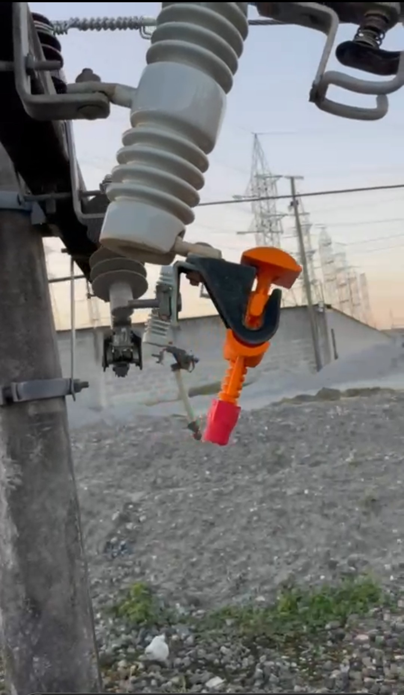

Conheça alguns dos projetos já concretizados

BLOQUEADOR DE CIRCUITOS DE BASE FUSIVEL
Desenvolvido em parceria com a EDP-ES, o bloqueador de circuitos da INOVAÇÃO BARCELLOS, impede o religamento de redes desenergizadas em operações de manutenção ou suspensão do fornecimento de energia elétrica a clientes atendidos em média tensão. Saiba Mais.

SUPORTE TEMPORÁRIO DE BASE FUSÍVEL
Desenvolvido em parceria com a EDP-ES, o Suporte temporário da INOVAÇÃO BARCELLOS, permite a instalação da base fusível a distância, com segurança e rapidez, permitindo o reestabelecimento da energia elétrica em até 10 minutos. Saiba Mais.

CARRO PARA TRANSPORTE DE TRANSFORMADOR
Carro movido a motor a combustão com 7 cavalos de potência, adaptado pela INOVAÇÃO BARCELLOS em parceria com a EDP-ES, tem a capacidade de transporte de transformadores de até 500kg. Saiba Mais.